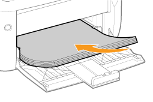
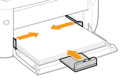

|
Information om papper som kan fyllas på i multiformatsfacket finns i "Lämpligt papper".
|
|
Se "Observera (Papperspåfyllning)" innan du fyller på papper.
|
1
Öppna multiformatsfacket.

2
Ställ in pappersguiderna något bredare och längre än pappersstorleken.

3
Fyll på papper försiktigt med utskriftssidan vänd uppåt och skjut in det mot kassettens bakkant.
Tänk på att fylla på papper i stående orientering.

|
VIKTIGT!
|
|
När du fyller på kuvert
Se "Skriva ut på kuvert" och fyll på papperet åt rätt håll.
|
|
OBS!
|
|
När du fyller på papper med brevhuvud eller logotyp
Se "Pappersorientering vid påfyllning" och fyll på papperet åt rätt håll.
|
4
Ställ in pappersguiderna efter papperet som har fyllts på.

|
VIKTIGT!
|
|
Se till att justera pappersguiderna efter papperet.
För brett eller för smalt inställda pappersguider kan leda till felaktig pappersmatning eller pappersstopp.
 |
5
Se till att pappersbunten inte överstiger lastbegränsningsguiderna (A) eller hakarna (B) på pappersguiderna.

|
Information om vanliga utskrifter finns i "Vanliga utskrifter".
|
 (Papper)-indikatorn (orange). Skrivaren återupptar utskriften genom att du trycker på [
(Papper)-indikatorn (orange). Skrivaren återupptar utskriften genom att du trycker på [  ] (Papper)-knappen.
] (Papper)-knappen.